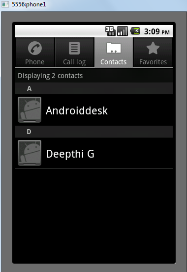

对于一个要执行的操作来说，Intent算作是一个抽象描述。比如通过startActivity(Intent)启动一个Activity、sendBroadcast(Intent)发送一个广播或者通过startService bindService和后台服务进行交互。
Intent为执行在不同应用不同组件之间代码的延时运行绑定提供了灵活的支持。最常见的用于启动activities，可以把Intent看做Activity之间的胶水。除此之外，Intent还持有一个数据结构来保存执行动作的抽象描述。
Intent 对象
虽说Intent是一个抽象描述，但是对于具体的Intent类来说它可以被归纳为携带一组信息的信使，正是该信使在安卓组件间进行传递才能达到信息传递的效果。
Intent 结构
一个Intent对象可以包含以下信息：
Action
可以直译为动作，它是
Intent的一条‘命令’。具体action以String类型来命名，Intent类中定义了许多action常量来匹配不同的Intent对象。例如ACTION_VIEWACTION_EDITACTION_MAIN等。action的存取可以通过setAction()和getAction()得到。
Data
data结构是要往
Intent过滤器中添加的，使用data类型（mimeType属性）通常可以解释为一个规格或者说明书，它既可以是一个Uri表达式也可以是一个mimeType。使用URI表达式时，要按顺序书写Uri每一部分的属性，注意:当使用URL属性来指定时，如果不把‘schema’指定清楚的话，所有的URI属性都被忽视。如果‘host’不指定的话，则它的‘port’和‘path’属性都被忽视。使用
setData()方法只可以设置URI属性的Data，如果设置mimeType属性的Data需要使用setType()方法。对于setDataAndType()方法既可以设置Uri也可以设置MIME，getData()和getType()分别获取URI和MIME类型。
下面是action/data 的例子：
- ACTION_VIEW content://contacts/people/1 显示person表中标识符为1的联系人。
- ACTION_DIAL content://contacts/people/1 显示电话拨号界面并且在显示框中显示person表中标识符为1联系人的电话号码
- ACTION_VIEW tel:123 显示电话拨号界面并且在显示框中填入123.
- ACTION_DIAL tel:123 显示电话拨号界面并且在显示框中填入123.
- ACTION_EDIT content://contacts/people/1 编辑person表中标识符为1的联系人的信息。
- ACTION_VIEW content://contacts/people/ 显示people列表
- ACTION_SET_WALLPAPER 显示设置选择壁纸
Category
category是
Intent中可选部分，以String类型命名并且包含了组件如何操作Intent的额外信息。使用addCategory()方法添加category，使用removeCategory()删除之前添加的category，getCategories()方法可以获取当前设置的category。
Extras
以键值对形式添加的一组额外信息，它将通过
Intent递交给组件进行处理。extras可以通过putExtras()和getExtras()方法进行存取操作。
Flags
这里的标记主要指启动Activity的方式，也是
Intent可选部分。要是单独讲解Activity启动方式就要另起篇幅了（以后的任务）。
组件名字
这部分也是
Intent可选部分，通常是指具体ActivityService和BroadcastReceiver类名。如果设置了，Intent对象将被递交给这个具体的组件进行处理，否则的话，安卓将使用其他信息寻找要启动的组件。组件名字可以通过setComponent(),setClass(), 或者setClassName()来设置，通过getComponent()来获取具体的组件名字。
Intent类型
显式Intent
Intent可以分为显式Intent和隐式Intent。平时我们用的最多就是显式Intent比如说在一个应用中经常要切换Activity就是使用的显式Intent。
显式Intent也比较简单只要指定好具体的组件名称即可。在上一节也讲到了通过setComponent(), setClass(), 或者setClassName()方法进行指定组件名，当然也可像上述代码中直接在构造其中指定也是可以的。
隐式Intent
这类Intent不会具体指定组件名，而是由安卓框架根据Intent设置的其他信息进行自动匹配。例如：
上述代码将通过对Intent设置的Action和Data信息启动一个联系人的应用进行显示动作。如果一个手机有多个联系人应用的话将弹出选择器列出所有的联系人应用供用户选择启动。
在安卓模拟器中默认打开了系统的联系人应用，如下图：

如果想在目标组件中使用Intent中的信息，可以使用
getExtras()方法获取extras数据（前提当然是在Intent设置了extras数据）。
|
|
好了这部分是安卓开发最基本最简单知识点了，也没什么可以说的难点和重点。只要敲上几次代码就会熟悉。Intent中稍微复杂且很有用的知识点就是下面要讲到的过滤器。
IntentFilter 匹配规则
对于隐式调用需要Intent能够匹配目标组件的IntentFilter中所设置的过滤信息，如果不匹配将无法启动目标Activity，IntentFilter中的过滤信息包括action、data、category。
|
|
为了匹配过滤列表，需要同时匹配过滤列表中的action、category、data信息，否则匹配失败。一个Activity可以有多个intent-filter，若一个intent只要能匹配任何一组intent-filter即可成功启动对应的Activity。
action的匹配规则
action是一个字符串，系统预定义了一些，同时我们也可以在应用中定义自己的action，如上述代码一样。对于action匹配规则可以总结如下：action的匹配要求Intent中的action存在且必须和过滤规则中的其中一个action相同即可匹配成功 另外注意的是action是区分字母大小写的。
category的匹配规则
category是一个字符串，系统预定义了一些，同时我们也可以在应用中定义自己的category，和action不同，我们可以在Intent中不定义category，但是一旦定义了category就要求所有的category和intent-filter中的规则都要匹配才行。我们可以通过
intent.addcategory("com.icedcap.category.a")或intent.addcategory("com.icedcap.category.b")亦或不设置category。不设置category也能匹配的原因是系统在调用startActivity或者startActivityResult的时候会默认为Intent添加android.intent.category.DEFAULT这个category，所以这个category可以匹配前面的过滤规则中的第三个category。同时，为了能够通过隐式调用启动该Activity，就必须在intent-filter中指定android.intent.category.DEFAULT这个category。
data的匹配规则
data的匹配和action类似，如果过滤规则中定义了data，那么Intent中必须也要定义可匹配的data。例如：
前文中讲到data可以通过Uri或者MimeType来表达：
对于Uri结构可以如下归置
对于MimeType来说可以是image/jpeg、audio/mpeg4-generic等。详细的mime类型可以查看这里。
对于下面的匹配规则来说
很明显，data需要匹配一个图片格式的数据，虽然上述代码没有对Uri进行匹配规则的设置，但是默认情况下它会匹配Uri的schema为content或者file的data。
所以通过以下代码可以匹配该Intent
以上就是我们Intent的匹配规则。
最后，我们通过隐式Intent启动一个Activity的时候，最好做一个判断是否有可匹配的Activity可以启动，以免不存在隐式Activity而报错。其做法也非常简单，可以通过PackageManager的resolveActivity方法或者Intent的resolveActivity方法，如果它们找不到可匹配的Activity就会返回null。从而判断是否可被隐式启动。